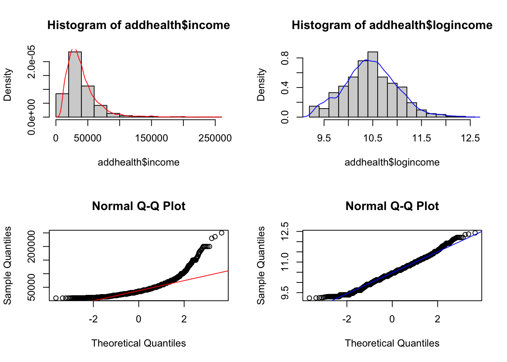
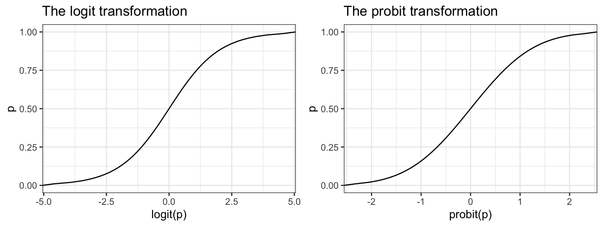
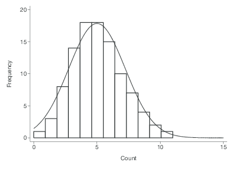
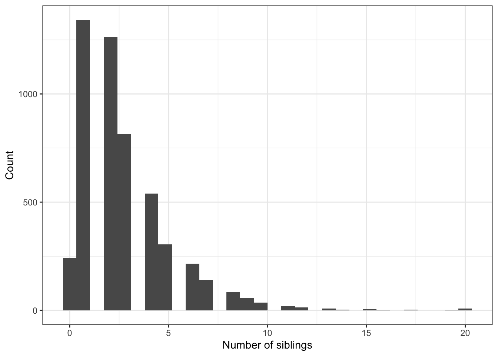

glm(y ~ x1 + x2 + x3, data=DATA, family="binomial") 11 Generalized Linear Models
Packages Used
One of the primary assumptions with linear regression, is that the error terms have a specific distribution. Namely:
\[ \epsilon_{i} \sim \mathcal{N}(0, \sigma^{2}) \qquad i=1, \ldots, n, \quad \mbox{and } \epsilon_{i} \perp \epsilon_{j}, i \neq j \]
When your outcome variable \(y\) is non-continuous/non-normal, the above assumption fails dramatically.
Generalized Linear Models (GLM) allows for different data type outcomes by allowing the linear portion of the model (\(\mathbf{X}\beta\)) to be related to the outcome variable \(y\) using a link function, that allows the magnitude of the variance of the errors (\(\sigma\)) to be related to the predicted values themselves.
There are a few overarching types of non-continuous outcomes that can be modeled with GLM’s.
- Binary data: Logistic or Probit regression (Section 11.4)
- Log-linear models (Section 11.2)
- Multinomial/categorical data: Multinomial or Ordinal Logistic regression. (Section 11.6)
- Count data: Poisson regression (Section 11.5.1)
11.1 Fitting GLMs
All regression models aim to model the expected value of the response variable \(Y\) given the observed data \(X\), through some link function \(C\)
\[E(Y|X) = C(X)\]
Depending on the data type of \(Y\), this link function takes different forms. Examples include:
- Linear regression: C = Identity function (no change)
- Logistic regression: C = logit function
- Poisson regression: C = log function
R
The general syntax is similar to lm(), with the additional required family= argument. See ?family for a list of options. Example for Logistic regression would be:
SPSS
File menu: Regression –> Binary Logistic.
Syntax:
logistic regression Y with x1 x2 x3
/categorical = x2IBM - reference
Stata
logistic Y x1 x2
Stata - reference
11.2 Log-linear models
A log-linear model is when the log of the response variable is modeled using a linear combination of predictors.
\[ln(Y) \sim XB +\epsilon\]
Recall that in statistics, when we refer to the log, we mean the natural log ln.
This type of model is often use to model count data using the Poisson distribution (Section 11.5.1).
Why are we transforming the outcome? Typically to achieve normality when the response variable is highly skewed.
Interpreting results
Since we transformed our outcome before performing the regression, we have to back-transform the coefficient before interpretation. Similar to logistic regression, we need to exponentiate the regression coefficient before interpreting.
When using log transformed outcomes, the effect on Y becomes multiplicative instead of additive.
- Additive For every 1 unit increase in X, y increases by b1
- Multiplicative For every 1 unit increase in X, y is multiplied by \(e^{b1}\)
Example: Let \(b_{1} = 0.2\).
- Additive For every 1 unit increase in X, y increases by 0.2 units.
- Multiplicative For every 1 unit increase in X, y changes by \(e^{0.2} = 1.22\) = 22%
Thus we interpret the coefficient as a percentage change in \(Y\) for a unit increase in \(x_{j}\).
- \(b_{j}<0\) : Positive slope, positive association. The expected value of \(Y\) for when \(x=0\) is \(1 - e^{b_{j}}\) percent lower than when \(x=1\)
- \(b_{j} \geq 0\) : Negative slope, negative association. The expected value of \(Y\) for when \(x=0\) is \(e^{b_{j}}\) percent higher than when \(x=1\)
Learn more
This UCLA resource is my “go-to” reference on how to interpret the results when your response, predictor, or both variables are log transformed.
11.2.1 Example
We are going to analyze personal income from the AddHealth data set. First I need to clean up, and log transform the variable for personal earnings H4EC2 by following the steps below in order.
- Remove values above 999995 (structural missing).
- Create a new variable called
income, that sets all values of personal income to be NA if below the federal poverty line.- First set
income= H4EC2 - Then set income to missing, if
H4EC2 < 10210(the federal poverty limit from 2008)
- First set
- Then create a new variable:
logincomethat is the natural log (ln) of income. e.g.addhealth$logincome = log(addhealth$income)
Why are we transforming income? To achieve normality.
par(mfrow=c(2,2))
hist(addhealth$income, probability = TRUE); lines(density(addhealth$income, na.rm=TRUE), col="red")
hist(addhealth$logincome, probability = TRUE); lines(density(addhealth$logincome, na.rm=TRUE), col="blue")
qqnorm(addhealth$income); qqline(addhealth$income, col="red")
qqnorm(addhealth$logincome); qqline(addhealth$logincome, col="blue")
Identify variables
- Quantitative outcome that has been log transformed: Income (variable
logincome) - Binary predictor: Ever smoked a cigarette (variable
eversmoke_c) - Binary confounder: Gender (variable
female_c)
The mathematical multivariable model looks like:
\[ln(Y) \sim \beta_{0} + \beta_{1}x_{1} + \beta_{2}x_{2}\]
Fit a linear regression model
ln.mod.2 <- lm(logincome~wakeup + female_c, data=addhealth)
summary(ln.mod.2) %>% pander()| Estimate | Std. Error | t value | Pr(>|t|) | |
|---|---|---|---|---|
| (Intercept) | 10.65 | 0.026 | 409.8 | 0 |
| wakeup | -0.01491 | 0.003218 | -4.633 | 3.73e-06 |
| female_cFemale | -0.1927 | 0.017 | -11.34 | 2.564e-29 |
| Observations | Residual Std. Error | \(R^2\) | Adjusted \(R^2\) |
|---|---|---|---|
| 3813 | 0.5233 | 0.03611 | 0.0356 |
1-exp(confint(ln.mod.2)[-1,]) 2.5 % 97.5 %
wakeup 0.02099299 0.008561652
female_cFemale 0.20231394 0.147326777Interpret the results
- For every hour later one wakes up in the morning, one can expect to earn
1-exp(-0.015)= 1.4% less income than someone who wakes up one hour earlier. This is after controlling for gender. - Females have on average
1-exp(-0.19)= 17% percent lower income than males, after controlling for the wake up time.
Both gender and time one wakes up are significantly associated with the amount of personal earnings one makes. Waking up later in the morning is associated with 1.4% (95% CI 0.8%-2%, p<.0001) percent lower income than someone who wakes up one hour earlier. Females have 17% (95% CI 15%-20%, p<.0001) percent lower income than males.
11.3 Binary outcome data
Consider an outcome variable \(Y\) with two levels: Y = 1 if event, = 0 if no event.
Let \(p_{i} = P(y_{i}=1)\).
Two goals:
- Assess the impact selected covariates have on the probability of an outcome occurring.
- Predict the probability of an event occurring given a certain covariate pattern. This is covered in Chapter 12
Binary data can be modeled using a Logistic Model or a Probit Model.
The logistic model relates the probability of an event based on a linear combination of X’s.
\[ log\left( \frac{p_{i}}{1-p_{i}} \right) = \beta_{0} + \beta_{1}x_{1i} + \beta_{2}x_{2i} + \ldots + \beta_{p}x_{pi} \]
Since the odds are defined as the probability an event occurs divided by the probability it does not occur: \((p/(1-p))\), the function \(log\left(\frac{p_{i}}{1-p_{i}}\right)\) is also known as the log odds, or more commonly called the logit. This is the link function for the logistic regression model.
This in essence takes a binary outcome 0/1 variable, turns it into a continuous probability (which only has a range from 0 to 1) Then the logit(p) has a continuous distribution ranging from \(-\infty\) to \(\infty\), which is the same form as a Multiple Linear Regression (continuous outcome modeled on a set of covariates)
The probit function uses the inverse CDF for the normal distribution as the link function. The effect of the transformation is very similar. For social science interpretation of the coefficients, we tend to choose the logit transformation and conduct a Logistic Regression. For classification purposes, often researchers will test out both transformations to see which one gives the best predictions.

11.4 Logistic Regression
Since the link between \(X\) and \(Y\) is no longer linear, a one unit increase in \(X_{p}\) is no longer associated with a \(b_{p}\) increase in \(Y\). The regression coefficients \(b_{p}\) from a logistic regression must be exponentiated before interpretation.
\[OR = e^{b}\]
The Odds Ratio (OR) provides a directly understandable statistic for the relationship between \(y\) and a specific \(x\) given all other \(x\)’s in the model are fixed. A later example in Section 11.4.4 provides a numeric example of how Odds Ratios are calculated.
In testing for a relationship between \(x\) and \(y\), our hypothesis is that \(\beta_{p}=0\). Since \(e^{0}=1\), the reference value for the Odds Ratio that signifies no relationship, is 1, not 0.
11.4.1 Interpreting Odds Ratios
Consider a binary outcome with values YES, coded as 1, and NO, coded as 0.
- OR = 1 = equal chance of response variable being YES given any explanatory variable value. You are not able to predict participants’ responses by knowing their explanatory variable value. This would be a non significant model when looking at the p-value for the explanatory variable in the parameter estimate table.
- OR > 1 = as the explanatory variable value increases, the presence of a YES response is more likely. We can say that when a participant’s response to the explanatory variable is YES (1), they are more likely to have a response that is a YES (1).
- OR <1 = as the explanatory variable value increases, the presence of a YES response is less likely. We can say that when a participant’s response to the explanatory variable is YES (1) they are less likely to have a response that is a YES (1).
For a continuous variable X with slope coefficient \(\beta\), the quantity \(e^{b}\) is interpreted as the ratio of the odds for a person with value (X+1) relative to the odds for a person with value X.
11.4.2 Confidence Intervals
Confidence intervals are a range for the population’s predicted odds ratio based on the sample data. We are 95% confident that any given population’s odds ratio would range between those two values.
The OR is not a linear function of the \(x's\), but \(\beta\) is. This means that a CI for the OR is created by calculating a CI for \(\beta\), and then exponentiating the endpoints. A 95% CI for the OR is calculated as:
\[e^{\hat{\beta} \pm 1.96 SE_{\beta}} \tag{11.1}\]
This math holds for any \(k\) unit change in x. The linearity of the confidence interval only applies at the untransformed level of the \(\beta\)’s. NOT the odds ratio.
11.4.3 Example: The effect of gender on Depression
This uses a cleaned version of the depression data set from PMAS6.
- Binary outcome variable: Symptoms of Depression (
cases) - Binary predictor variable: Gender (
sex) as an indicator of being female
The outcome \(y\) is a 0/1 Bernoulli random variable. The sum of a vector of Bernoulli’s (\(\sum_{i=1}^{n}y_{i}\)) has a Binomial distribution. When we specify that family = "binomial" the glm() function auto-assigns “logit” link function.
dep_sex_model <- glm(cases ~ sex, data=depress_clean, family="binomial")
summary(dep_sex_model)
Call:
glm(formula = cases ~ sex, family = "binomial", data = depress_clean)
Coefficients:
Estimate Std. Error z value Pr(>|z|)
(Intercept) -3.3511 0.6867 -4.880 1.06e-06 ***
sex 1.0386 0.3767 2.757 0.00583 **
---
Signif. codes: 0 '***' 0.001 '**' 0.01 '*' 0.05 '.' 0.1 ' ' 1
(Dispersion parameter for binomial family taken to be 1)
Null deviance: 268.12 on 293 degrees of freedom
Residual deviance: 259.40 on 292 degrees of freedom
AIC: 263.4
Number of Fisher Scoring iterations: 5We exponentiate the coefficients to back transform the \(\beta\) estimates into Odds Ratios
exp(coef(dep_sex_model))(Intercept) sex
0.03504558 2.82517483 exp(confint(dep_sex_model)) 2.5 % 97.5 %
(Intercept) 0.008071827 0.1225716
sex 1.399110558 6.2142384Females have 2.8 (1.4, 6.2) times the odds of showing signs of depression compared to males.
11.4.4 Multiple Logistic Regression
Let’s continue with the depression model, but now also include age and income as potential predictors of symptoms of depression.
mvmodel <- glm(cases ~ age + income + sex, data=depress_clean, family="binomial")
summary(mvmodel)
Call:
glm(formula = cases ~ age + income + sex, family = "binomial",
data = depress_clean)
Coefficients:
Estimate Std. Error z value Pr(>|z|)
(Intercept) -1.60590 0.84654 -1.897 0.05782 .
age -0.02096 0.00904 -2.318 0.02043 *
income -0.03656 0.01409 -2.595 0.00946 **
sex 0.92945 0.38582 2.409 0.01600 *
---
Signif. codes: 0 '***' 0.001 '**' 0.01 '*' 0.05 '.' 0.1 ' ' 1
(Dispersion parameter for binomial family taken to be 1)
Null deviance: 268.12 on 293 degrees of freedom
Residual deviance: 247.54 on 290 degrees of freedom
AIC: 255.54
Number of Fisher Scoring iterations: 5- The sign of the \(\beta\) coefficients can be interpreted in the same manner as with linear regression as having a positive or negative relationship.
- The odds of being depressed are less if the respondent has a higher income and is older, and higher if the respondent is female.
The odds of a female being depressed are 2.53 times greater than the odds for Males after adjusting for the effects of age and income (p=.016).
Example calculation for \(OR = e^{\beta}\)
The full model is: \[log(odds) = -0.676 - 0.02096*age - .03656*income + 0.92945*gender\]
We want to calculate the Odds Ratio of depression for women compared to men. \[ OR = \frac{Odds (Y=1|F)}{Odds (Y=1|M)} \]
Write out the equations for men and women separately. \[ = \frac{e^{-0.676 - 0.02096*age - .03656*income + 0.92945(1)}} {e^{-0.676 - 0.02096*age - .03656*income + 0.92945(0)}}\]
Applying rules of exponents to simplify. \[ = \frac{e^{-0.676}e^{- 0.02096*age}e^{- .03656*income}e^{0.92945(1)}} {e^{-0.676}e^{- 0.02096*age}e^{- .03656*income}e^{0.92945(0)}}\]
\[ = \frac{e^{0.92945(1)}} {e^{0.92945(0)}}\]
\[ = e^{0.92945} \]
exp(.92945)[1] 2.533116exp(coef(mvmodel)[4]) sex
2.533112 11.4.5 Effect of a k unit change
- Sometimes a 1 unit change in a continuous variable is not meaningful.
- \(exp(kb)\) is the incremental odds ratio corresponding to an increase of \(k\) units in the variable X, assuming that the values of all other X variables remain unchanged.
tbl_regression(mvmodel, exponentiate=TRUE)| Characteristic | OR1 | 95% CI1 | p-value |
|---|---|---|---|
| age | 0.98 | 0.96, 1.00 | 0.020 |
| income | 0.96 | 0.94, 0.99 | 0.009 |
| sex | 2.53 | 1.23, 5.66 | 0.016 |
| 1 OR = Odds Ratio, CI = Confidence Interval | |||
- The Adjusted odds ratio (AOR) for increase of 1 year of age is 0.98 (95%CI .96, 1.0)
- How about a 10 year increase in age? \(e^{10*\beta_{age}} = e^{-.21} = .81\)
In generalized linear models, the assumptions on \(\beta\) having a normal distribution.
Refer back to Equation 11.1, the linearity of the relationship is on the \(\beta\) level, not the odds ratio. Do all transformations on the \(\beta\)’s, then the last step is the non-linear transformation of exponentiation.
So the mathematical order of operations is important! First use coef to extract the coefficients out of the model object (here named mvmodel), then pull the 2nd item out coef(mvmodel)[2], then multiply it by 10, then lastly exponentiate this value.
exp(10*coef(mvmodel)[2]) age
0.8109285 Do the same to calculate the confidence interval for a 10 year time span.
round(exp(10*confint(mvmodel)[2,]),3) 2.5 % 97.5 %
0.676 0.965 Controlling for gender and income, an individual has 0.81 (95% CI 0.68, 0.97) times the odds of being depressed compared to someone who is 10 years younger than them.
11.4.6 Example: Predictors of smoking status
Consider a logistic model on smoking status (0= never smoked, 1=has smoked) using gender, income, and blood pressure class (bp_class) as predictors.
\[ logit(Y) = \beta_{0} + \beta_{1}\mbox{(female)} + \beta_{2}\mbox{(income)} + \beta_{3}\mbox{(Pre-HTN)} + \beta_{4}\mbox{(HTN-I)} + \beta_{5}\mbox{(HTN-II)} \]
bp.mod <- glm(smoke ~ female_c + income + bp_class, data=addhealth, family='binomial')
tbl_regression(bp.mod, exponentiate=TRUE)| Characteristic | OR1 | 95% CI1 | p-value |
|---|---|---|---|
| female_c | |||
| Male | — | — | |
| Female | 0.54 | 0.46, 0.63 | <0.001 |
| income | 1.00 | 1.00, 1.00 | 0.005 |
| bp_class | |||
| Normal | — | — | |
| Pre-HTN | 1.08 | 0.92, 1.26 | 0.4 |
| HTN-I | 0.98 | 0.79, 1.21 | 0.8 |
| HTN-II | 1.03 | 0.71, 1.50 | 0.9 |
| 1 OR = Odds Ratio, CI = Confidence Interval | |||
It is unlikely that blood pressure is associated with smoking status, all groups are not statistically significantly different from the reference group (all p-values are large). Let’s test that hypothesis formally using a Wald Test.
survey::regTermTest(bp.mod, "bp_class")Wald test for bp_class
in glm(formula = smoke ~ female_c + income + bp_class, family = "binomial",
data = addhealth)
F = 0.428004 on 3 and 3723 df: p= 0.73294 The Wald Test has a large p-value of 0.73, thus blood pressure classification is not associated with smoking status.
- This means blood pressure classification should not be included in a model to explain smoking status.
11.4.7 Model Fit
Pseudo \(R^{2}\)
Recall in linear regression, the coefficient of determination \(R^{2}\) could be used as a measure of model fit, as it represents the proportion of variance in the outcome explained by the model. This statistic can’t be calculated for Logistic regression, but several versions of a Pseudo \(R^{2}\) have been proposed, and are printed as part of the output for many statistical packages such as Stata.
Goodness of Fit
Another way to assess model fit for the entire model is to perform a goodness-of-fit test. The one developed by Hosmer and Lemeshow (1980) is the most commonly used GoF test. In this approach,
- the predicted probability of belonging to the event group (y=1) is calculated for every observation.
- these probabilities are sorted in ascending order, then divided into \(j\) equal sized subgroups, typically deciles to create 10 ‘bins’.
- For each ‘bin’, or range of probabilities, count the observed number of individuals with the event (y=1) (\(O_{j}\)).
- For each ‘bin’, calculate the expected number of events by adding the predicted probabilities in that bin. (\(E_{j}\))
The goodness of fit statistic is then calculated as follows:
\[ GoF \chi^{2} = \sum_{j} \frac{(O_{j}-E_{j})^2}{E_{j}} \]
which approximately follows a \(\chi_{J-2}^{2}\) distribution under relatively large sample sizes.
A large GoF statistic (or small p-value) indicate that the fit may NOT be good
R package: MKmisc, function HLgof.test.
Mkmisc::HLgof.test(fit=fitted(model), obs=model$y)Accurate predictions
Since the logistic regression is all about modeling the probability of an event occurring, we can use that model to create predicted probabilities. The next chapter discusses how to use a logistic regression model for prediction, and what measures of fit are used to assess how “accurate” the model is.
11.5 Count outcome data
Lets consider modeling the distribution of the number of of occurrences of a rare event in a specified period of time - e.g. Number of thunderstorms in a year
- If we assume:
- Rate (\(\mu\)) is fixed over time
- Successive occurrences independent of each other
Then we can use the Poisson distribution.
\[ P(Y=y) = e^{-\mu}\frac{\mu^{y}}{y!} \]
- The Poisson distribution has a distinct feature where the mean of the distribution \(\mu\), is also the variance.

11.5.1 Poisson Regression
This section is still under development
Just another GLM - we use a \(ln\) as the link function. This lets us model the log rates using a linear combination of covariates.
\[ ln(\mu) = \mathbf{X}\beta \]
Then the expected rate of events per unit of time is:
\[ \mu = e^{\mathbf{X}\beta} \]
This model assumes that the time of “exposure” for each record is identical.
- Number of cigarettes per month
- Number of epileptic seizures per week
- Number of people with lung cancer in four cities
If this is not the case (often), then this model needs to include an offset.
- e.g. observing each patient for epileptic seizures for a different number of days
- accounting for different sizes or structures of populations of interest (e.g. different cities with lung cancer)
What actually gets fit in glm is the model of expected counts, rather than rates, with an offset for the time period \(T\).
- If all time periods are the same, then T is constant, and a linear combination of the intercept, thus dropped from the model.
\[ ln(\lambda) = \mathbf{X}\beta + ln(T) \]
While this offset will be added to the regression model as if it were another variable, it’s not quite the same because the regression coefficient for the \(ln(T)\) term is fixed at 1.
The generic formula for fitting a poisson model using glm is:
glm(y ~ x1 + x2 + offset(log(T)), family='poisson')or alternatively as an argument
glm(y ~ x1 + x2, offset = log(T), family='poisson')The interpretation of the \(\beta\) regression coefficients are differences in the log rate (or the log rate-ratio). So, just like with a logistic regression often we back-transform the coefficients by exponentiating before interpreting. So \(e^{\beta}\) is now the rate-ratio.
- The intercept term is not a ratio, but a baseline rate when all covariates are 0
- For other covariates, the coefficient is the relative change per unit change in the covariate.
- one year older
- males vs females
Also, similar to logistic regression, since the outcome was transformed, the standard errors are not useful or interpretable as is. To calculate confidence intervals for the rate ratios,
- calculate the CI for \(\beta\)
- exponentiate each end point.
11.5.2 Example: Modeling counts from the Add Health Wave IV dataset.
Let’s model the number of siblings someone has, based off their age at Wave 1 (2008).
Visualize
ggplot(addhealth, aes(x=nsib)) + geom_histogram() +
xlab("Number of siblings") + ylab("Count")
nsib.model <- glm(nsib ~ agew1 + female, data=addhealth, family="poisson")
tbl_regression(nsib.model, exponentiate = TRUE)| Characteristic | IRR1 | 95% CI1 | p-value |
|---|---|---|---|
| agew1 | 1.05 | 1.03, 1.06 | <0.001 |
| female | 1.10 | 1.06, 1.14 | <0.001 |
| 1 IRR = Incidence Rate Ratio, CI = Confidence Interval | |||
11.6 Categorical outcome data
This section is still under development
If you want to keep the response variable as a categorical variable with more than two levels, the following regression model types are available: